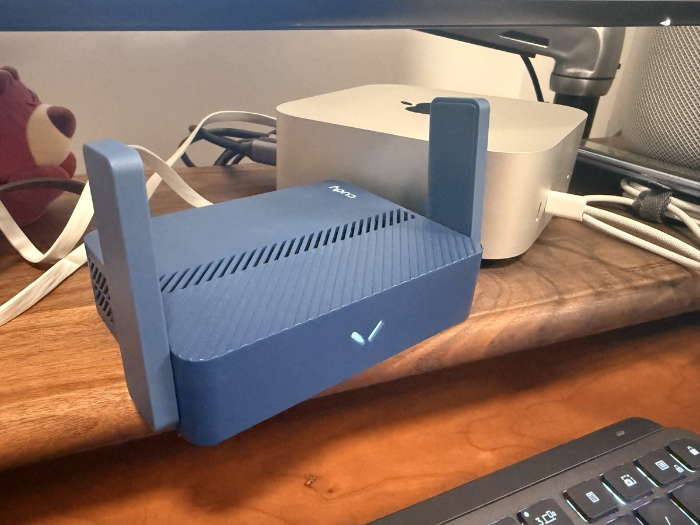

たたなこ
@tatanakots
@0xNathanWalk 三十多买个zn m2也能做到，便携的话二十多买个410棒子都可以，低成本方案有很多

Nathan
@0xNathanWalk
将家里打造成一个无墙环境只需 150块
两年前的帖子最近每天都会有几个赞，不会现在还有人玩梅林这个老古董了吧？当年为了让家里无墙买这玩意花了1600多，现在实现只需要 150块。
准备工作：
一个 Cudy 路由器
我的型号是 AX3000 去年刚火的时候全新 100多，现在涨价了，直接闲鱼收个便宜的就行。 https://t.co/gty3KcfAJE https://t.co/KFye0x3GCw